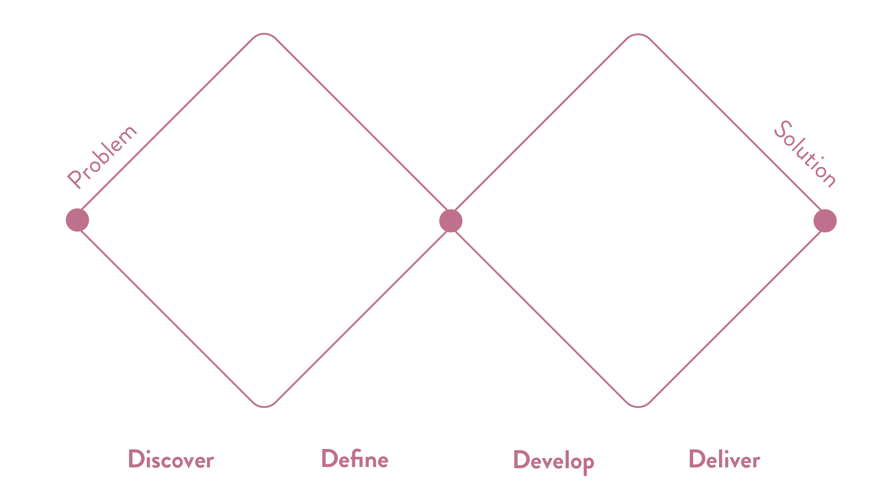
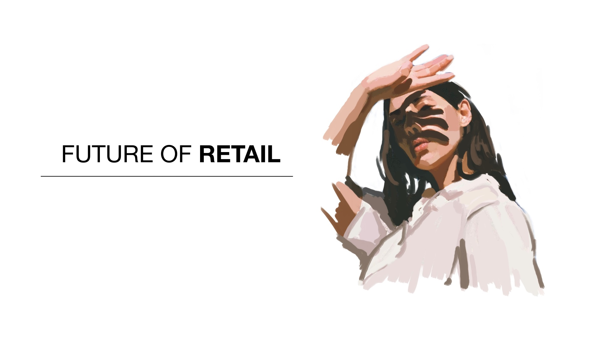
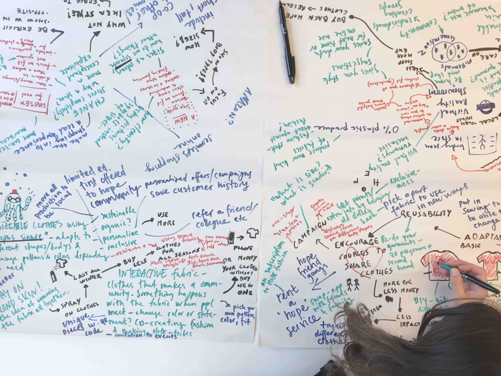
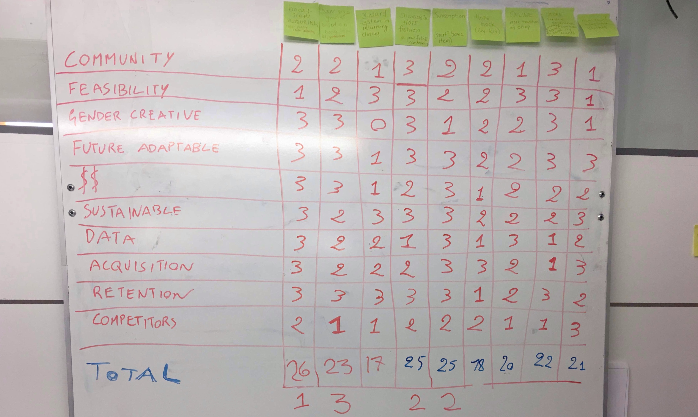
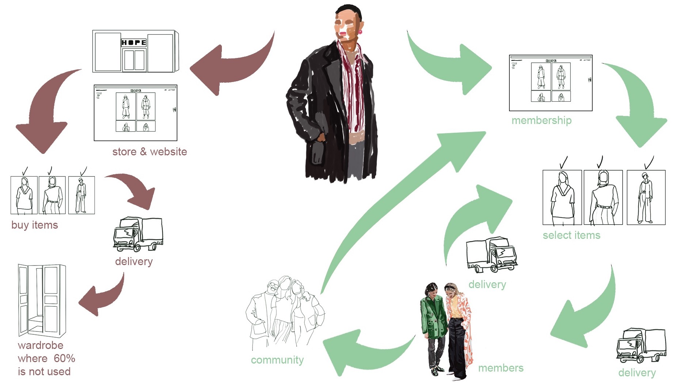

Background
Hope is a Swedish fashion brand with a passion for high-quality garments that inspire and emphasize the individual style. The brand believes in progressive – yet timeless – design, strong tailoring and attention to detail. They’re passionate about diversity, creativity and self-expression.
The brief was to develop the brand using data-driven strategy with Hope’s values at its core.
The Process
To explore the objective of the brief and to structure our creative process and improve our way of working to come up with a solution, we chose the design process model Double Diamond. We started with understanding the why and defining the how, explored the possible solutions, created one and tested it.
Gathering Insights
Based on a combination of several sources of quantitative data the service is especially attractive to the age range of 18-30-year-olds. A target group that to some level already has an active engagement with the brand, but with other values and financial position compared to the average Hope customer.
Catering to Hope’s value for a more sustainable fashion consumption, the solution is built with a circular economy as the core to reduce waste and have continual use of resources.
Understanding the Challenge
With our insights, we could start defining the challenges. To turn those challenges into opportunities we came up with the following “How Might We” questions:
- How might we create a new business model for Hope to collect and use customer data in a more systematic way?
- How might we align with upcoming trends, without compromising the brand identity?
- How might we widen the audience of Hope without lowering the price hence damaging the brand equity compromising the quality?
- How might we maximize the design effort and fully value the creative process for Image Styles garments?
Conceptualising
From our questions, we started the developing phase by ideating.
I came up with the idea of renting a Hope piece. Together with my team, we developed this idea into a subscription service. The customer rents a couple of Hope pieces for a limited time, able to return the items and switch to other pieces for a new period.
Introducing this rotation of items will provide more use out of each garment while aiming to fulfil the need to change the style and try new garments without choosing fast fashion.
Evaluation
To evaluate our ideas we selected factors such as data collection opportunity, adaptable to the future, gender creative and feasibility amongst others. The variables were rated from a scale 1-3 and the factors with the highest score were decided to develop further.
Develop
To understand the potential experience from the user’s standpoint I wanted to dig deeper into the present shopping experience. I visualised a map focusing on the particular interaction of buying a Hope piece as it is today. Parallel to this, I visualised the future user journey with the new concept. Below is a streamlined version of the user journeys.
Prototyping
I created a high-fidelity prototype to get at better comprehension of the service visually. It also allowes testing and making improvements simultaneously with developing it.
To improve the user experience a feature of adding items to a wishlist was implemented, making it easier for the user to order the items later on. This feature also enables collecting data on what the user likes.
The look of the app is having the overall design similar to the one on Hope’s website, to make the transition from the current experience to the new concept easy. The prototype includes:
- Logging in to a separate membership section for the subscription service
- A personalised home page
- Item suggestions based on the user’s interaction with the website
- Access to the items included in the subscription service with details about the garments, prices, sizes, reviews and suggestions on a complete look
- The user’s digital Hope wardrobe
- Ability to order items to loan, book delivery and schedule return
- An inspiration page with content by Hope and the community
Result
A subscription service built with wireframes for an app.
What was successful? The client was thrilled by the concept and wanted to keep in contact to explore how this could turn into reality. Also, the rigorous research, analysing the data and finding patterns to come up with a solution viable for a new target group.
What could’ve been done differently? I think allocating resources from the discover and define phase to do thorough user testing. To test our assumptions we based our solution on. Implement more of a learn by doing mindset to get a better user insight and to improve the service.